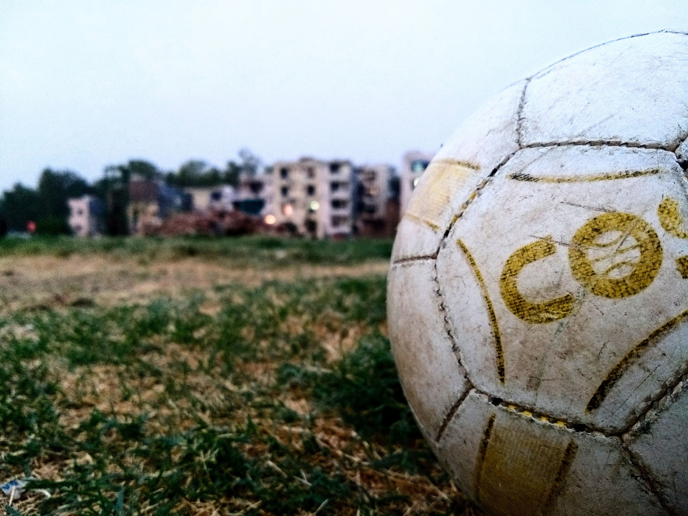

Outside of work my hobbies include football and going to the gym.
When it comes to playing football. I am average at best. Some
times I can have a good game, other times I miss chances that are
probably easier to score.
It’s all for fun anyway. I play
with friends/family and it’s nice to socialize and catch up with
others. I enjoy watching football and I believe I have a good
understanding of the game.


I believe that keeping fit and healthy lays the foundation to your
success. Eating well, keeping fit makes you happy and it gives you
natural energy which you can use for your passions and hobbies.
I am happy with progress I have made fitness-wise. I was around
73kg in June 2023 and I fluctuate around 69kg now. I have toned up
a bit in the process too.

I like to seek knowledge in regards to my religion too. This is something we are encouraged to do and learning new things about it and key information is really beneficial.